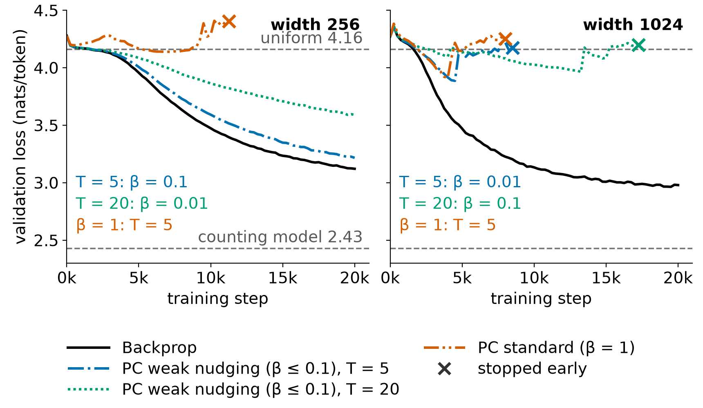

Bau Lab plotathon · November 6, 2026 · pilot results
Why don’t backprop alternatives have scaling laws?
A predictive coding (PC) pilot: it doesn’t yet train stably across the range a scaling law needs.
Setup: small MLP language models · synthetic Markov text (64 symbols) · 106 training tokens · widths 256 and 1024

-
Stable only where PC imitates backprop
With weak nudging, PC trails backprop by about 0.1 nats, and inference barely changes the network (energy drops about 1%). A sweep here would be circular.
-
Breaks as width grows
At width 1024, no PC run gets below 3.88: each jumps back up to about uniform and stops early. Likely cause, not yet tested: weights grow with width, so a fixed inference step overshoots.
-
More inference makes it worse
T = 20 loses to T = 5, although more settling should bring PC closer to backprop. Inference itself looks unstable.
Next: log weight norms to test the cause, then μP-style learning rates for both rules, then real text (TinyStories).
Ask: Has anyone used μP with predictive coding or other energy-based models? How should PC’s compute be counted?
Soham Padia · Bau Lab plotathon · November 6, 2026 · pilot results
Talk notes
Opening, about 30 s
This started in Professor Bau’s deep learning class, when we read Kaplan’s scaling laws paper. Its claim is simple: language-model loss falls as a smooth power law as you add parameters, data and compute. Reading it, I kept asking questions the paper doesn’t answer. Where does grokking fit, when models generalize long after they’ve memorized? Why don’t we copy the brain? And the one I couldn’t drop: what would scaling laws look like for the human brain? How would a brain even score?
The brain question, about 45 s
I tried a back-of-the-envelope answer. When people play next-token prediction, they score worse than fairly small language models, very roughly 3 nats per token. But if you plug a brain into Kaplan’s own formula, around 1014 synapses and maybe a billion words of language, it predicts about the same number. By Kaplan’s math, the brain is a huge model starved for data. These numbers are very rough, but they changed my question. I first wanted the irreducible error of the brain, but the irreducible loss is the entropy of the text itself: the same floor for any learner. What differs between learners is how fast they approach it, the exponents. So the testable version is: do brain-like learning rules have a different data exponent than backprop?
The gap, about 20 s
That’s the title question. Almost nobody has fit scaling laws to backprop alternatives. The only one I found is a 2022 paper on direct feedback alignment, which fit only the compute trend and found it scales worse than backprop. Last year, muPC got predictive coding to train networks over a hundred layers deep, but on MNIST-scale classification.
The pilot, about 75 s
So I ran a pilot with predictive coding. In one sentence: every layer tries to predict the next one, the network settles to reduce those prediction errors, and each weight learns only from the errors next to it, with no global backward pass. I trained small MLP language models on synthetic text with backprop and with PC, at widths 256 and 1024.
(Point left.) At width 256, PC only works when the target pulls on the network gently, and in that regime it’s basically imitating backprop, trailing it by about a tenth of a nat. Scaling it there would just measure backprop. Standard-strength PC fails.
(Point right.) At width 1024, backprop keeps improving, but every PC run bottoms out near 3.9, jumps back up to about chance and stops. My hypothesis, not tested yet: the weights grow with width, so PC’s fixed settling step starts overshooting.
Third, more settling steps made PC worse, which shouldn’t happen if settling converged. Same direction: the inference itself is unstable.
So the honest answer to my title, for now: you can’t fit a scaling law to a method that doesn’t train across the range the law needs.
Next and asks, about 30 s
Next I’ll log weight norms and try a smaller settling step, then add muP-style learning rates for both rules, and add feedback alignment as a contrast with no settling loop at all. Then real text, TinyStories.
Two questions for you: has anyone used muP with predictive coding or other energy-based models? And how would you count PC’s compute fairly, since its settling steps cost extra?